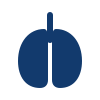

STRUCTURAL COMPARISON ATLAS
Cancer Comparisons
Fifteen tumor–normal comparisons organized by disease class. Select a comparison to open its complete structural report.
15
comparisons
9
carcinomas
2
blastomas
2
lymphomas
2
leukemias
Carcinomas
BLAD/TCC
Bladder transitional cell carcinoma
BR/BRAD
Breast adenocarcinoma
COL/COADREAD
Colorectal adenocarcinoma
KID/RCC
Renal cell carcinoma

LU/LUAD
Lung adenocarcinoma
OV/OVAD
Ovarian adenocarcinoma
PA/PAAD
Pancreatic adenocarcinoma
PR/PRAD
Prostate adenocarcinoma
UT/EAC
Uterine endometrial adenocarcinoma
Blastomas
Brain/GBM
Glioblastoma
Brain/MB
Medulloblastoma
Lymphomas
GC/FL
Follicular lymphoma
GC/LBCL
Large B-cell lymphoma
Leukemias
PB/B-ALL
B-cell acute lymphoblastic leukemia
PB/T-ALL
T-cell acute lymphoblastic leukemia
The silhouettes are restrained anatomical and hematologic symbols intended to aid recognition without depicting tumors, lesions, surgery, or graphic pathology.